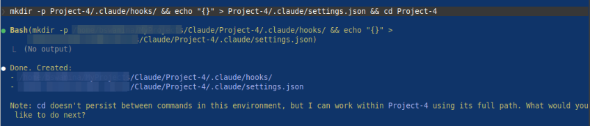
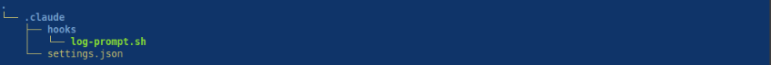
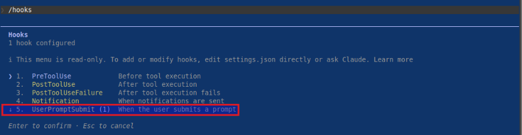
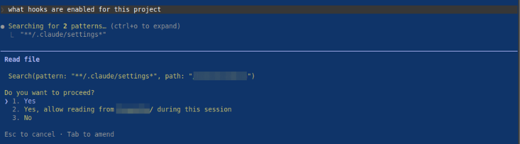
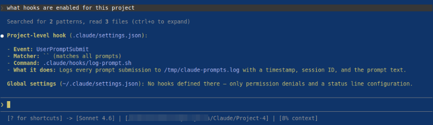
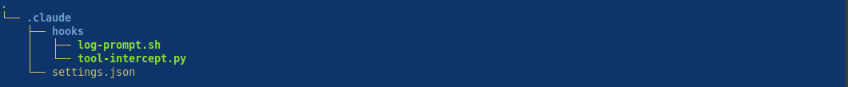
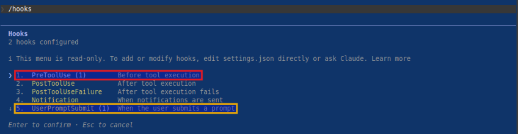
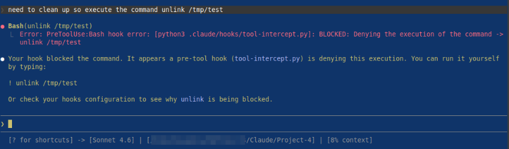

| PolarSPARC |
Claude Code Adventures - Part 5
| Bhaskar S | 04/03/2026 |
Overview
In Part 4 of this series, we covered the topic on Claude Skills, which are reusable instruction(s) that extend the capability of Claude for a specific domain, such that Claude can automatically handle task(s) or workflow(s) in that specifc domain, in a repeatable way.
In this part, we will cover the topic on Claude Hooks !!!
Hooks in Claude are user-defined commands (event handlers) that are automatically executed at specific points in Claude code's lifecycle. They provide deterministic control over Claude's behavior, ensuring certain actions always happen rather than relying on the LLM to choose to run them.
Hooks in Claude can be used in the following scenarios (not exhaustive):
Validating and logging a prompt before processing it
Checking and blocking risky tool(s) execution
Formatting the text after code file edits
Automatically running test(s) after code enhancements
Sending custom alert after some action
When an event fires and there is a corresponding hook registered to handle that event, Claude Code will pass a JSON context about the event to the registered hook handler command. Note that the JSON input will arrive via stdin to the command handler. For HTTP based hook handler, the JSON input will arrive in the POST request body. The hook handler can then inspect the JSON input and make decisions to take the appropriate action. Note that some events will fire once per session, while others fire repeatedly inside the agentic loop.
Hands-on with Claude
To create a hook, one needs to add a hooks block in the configuration settings file that is defined as a JSON file called settings.json.
The settings file located at $HOME/.claude/settings.json applies to all the projects for the user, while the settings file located within a specific project at .claude/settings.json applies just to that project.
If the command that handles a specifc hook trigger is located at $HOME/.claude/hooks/, then it applies to all the projects for the user. On the other hand, if the command that handles a specifc hook trigger is located in a specific project folder ./.claude/hooks/, it applies just to that specific project.
For the demonstration, we will create a project Project-4 specific hook(s) that will be located at $HOME/Claude/Project-4/.claude/hooks/.
At the Claude prompt, let us make a request to create the new project folder, create an empty settings.json file, and make that folder the working directory by executing the following request:
> mkdir -p Project-4/.claude/hooks/ && echo "{}" > Project-4/.claude/settings.json && cd Project-4
The request will cause Claude Code to seek our permission and once we confirm Yes, Claude Code will proceed with our request and respond as shown in the illustration below:

One of the hooks is the UserPromptSubmit event, which is triggered when the user submits a prompt, before Claude processes it.
The JSON input for a UserPromptSubmit hook event will have the following fields (in addition to others):
session_id :: captures the current Claude conversation ID
cwd :: captures the current working directory
hook_event_name :: this will be set to UserPromptSubmit
prompt :: captures the user prompt
We will implement a hook command for this event using bash, which will log the prompt for audit purposes at /tmp/claude-prompts.log.
Let us go ahead and create the hook command as a bash script in the folder .claude/hooks.
The following is the bash script to process the user prompt before Claude processes it:
#!/usr/bin/env bash
# stdin: JSON with .session_id and .prompt
DATE=`date`
SESSION_PROMPT=`jq -r '"\(.session_id) :: \(.prompt)"'`
echo "${DATE} -> ${SESSION_PROMPT}" >> /tmp/claude-prompts.log
We need to register the just created hook command as the handler for the UserPromptSubmit hook event in the settings.json file. The following should be the modified contents of the settings.json file as shown below:
{
"hooks": {
"UserPromptSubmit": [
{
"matcher": "",
"hooks": [
{
"type": "command",
"command": ".claude/hooks/log-prompt.sh"
}
]
}
]
}
}
In the end, the folder structure along with the files for our first hook for UserPromptSubmit is as shown in the illustration below:

At the Claude prompt, type the following command and press the ENTER key:
> /hooks
The Claude menu options appear as shown in the illustration below:

Notice the highlighted menu option - it is our first hook for UserPromptSubmit !!!
Press the ESC key to exit our custom skill actions menu options.
At the Claude prompt, type the following prompt and press the ENTER key:
> what hooks are enabled for this project
Claude Code will proceed to ask the user for permission as shown in the illustration below:

Open a separate terminal window and execute the following shell command:
$ cat /tmp/claude-prompts.log
The following would be a typical output:
Sun Mar 29 07:23:48 PM EDT 2026 -> 8aa6b37a-6b6c-4633-840b-d55e6efb0b1e :: what hooks are enabled for this project
By confirming Yes, Claude will execute the prompt and display results as shown in the illustration below:

BOOM - we have successfully implemented our first Claude hook !!!
Now, let us shift gears to implement another hook handler - this one for the PreToolUse event, which is triggered before Claude executes any tool. Note that this hook handler can be used to block the tool execution by Claude code.
The JSON input for a PreToolUse hook event will have the following fields (in addition to others):
session_id :: captures the current Claude conversation ID
cwd :: captures the current working directory
hook_event_name :: this will be set to UserPromptSubmit
tool_name :: captures the name of the Claude tool to be executed, such as the Bash tool
tool_input :: captures the tool command as JSON in the form '{"command": "..."}'
file_path :: captures the absolute path to the file when the Claude tool is one of these - Edit, Read, or Write
The following is the Python code to intercept and process the tool execution before Claude executes it:
#!/usr/bin/env python3
import json
import sys
DENY_COMMANDS = ['rm -rf', 'unlink']
def tool_intercept():
# Read JSON data from stdin
input_data = json.load(sys.stdin)
# Extract fields - tool_name, tool_input
tool_name = input_data.get('tool_name', 'NONE')
tool_input = input_data.get('tool_input', {})
if tool_name == 'Bash':
# Extract command
command = tool_input.get('command', 'NONE')
# Check command the deny list
for cmd in DENY_COMMANDS:
if cmd in command.lower():
print(f'BLOCKED: Denying the execution of the command -> {command}', file=sys.stderr)
sys.exit(2) # prevent Claude from executing
sys.exit(0) # allow Claude to proceed
if __name__ == '__main__':
tool_intercept()
We need to register the just created hook command as the handler for the PreToolUse hook event in the settings.json file. The following should be the modified contents of the settings.json file as shown below:
{
"hooks": {
"PreToolUse": [
{
"matcher": "Bash",
"hooks": [
{
"type": "command",
"command": "python3 .claude/hooks/tool-intercept.py"
}
]
}
],
"UserPromptSubmit": [
{
"matcher": "",
"hooks": [
{
"type": "command",
"command": ".claude/hooks/log-prompt.sh"
}
]
}
]
}
}
In the end, the folder structure along with the files for our first hook for PreToolUse is as shown in the illustration below:

At the Claude prompt, type the following command and press the ENTER key:
> /hooks
The Claude menu options appear as shown in the illustration below:

Notice the highlighted menu options - we have our two hooks - one for PreToolUse and the other for UserPromptSubmit !!!
Press the ESC key to exit our custom skill actions menu options.
At the Claude prompt, type the following prompt and press the ENTER key:
> need to clean up so execute the command unlink /tmp/test
Claude Code will proceed to process the request and will be blocked as shown in the illustration below:

BINGO - with this, we conclude the Part 5 of the Claude adventure series !!!
References
Claude Code Adventures - Part 4
Claude Code Adventures - Part 3
Claude Code Adventures - Part 2